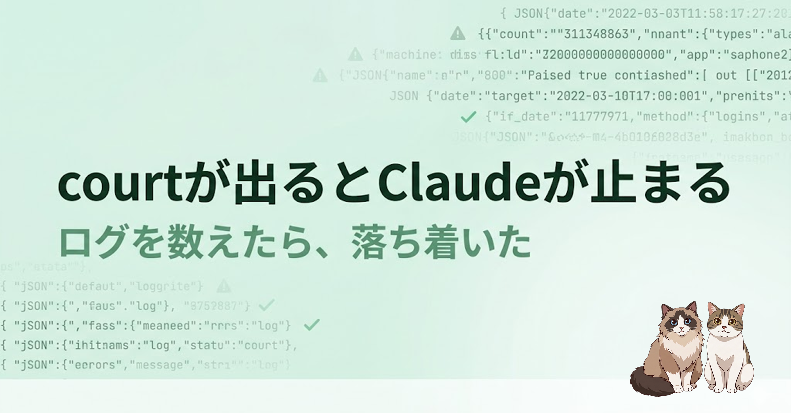

Claude Code を使っていると、たまに court という文字列だけ画面に出して、ツールが何も実行されないまま止まることがあります。「気のせいかも」で済ませず、ローカルに残っている会話ログを数えてみました。
意外と知られていないと思うのですが、Claude Code は会話の全記録をローカルに残しています。場所はここです。
%USERPROFILE%\.claude\projects\~/.claude/projects/プロジェクトフォルダごとに分かれていて、セッションひとつにつき .jsonl ファイルが積まれます。中身は JSON 行形式で、assistant が出した文章・ツール呼び出しの内容と結果・停止理由（stop_reason）まで全部入っています。rg（ripgrep）で横断検索できます。
rg -i 'court' ~/.claude/projects/手元では 4,758 ファイル、合計 1.3GB ありました。全部 Claude との会話です。多めの方だとは思います。
最初の単純一致は 92 件でした。「やっぱり大量に起きてる」と思いかけて、止まりました。court は普通の英語にも混ざります。courtesy、courts、人名の Delcourt、画像データや署名の中に偶然入っているもの。そのまま「92 回フリーズした」と読むのは雑すぎます。
JSON としてパースし直して、見るポイントをこう決めました。
court が単独の単語として出ているか<invoke name="..."> が続いているかstop_reason=end_turn でターンが終わっていないかこの基準で絞ると、問題の形に近いものは 58 件 / 7 セッション。うち court <invoke ...> の形式は 30 件。直後に「ツール呼び出しが壊れています」とエラーが返ったもの、または生テキストで漏れた文脈があるものは 29 件。
気のせい、ではありませんでした。
正直に書いておくと、court が出ても必ず完全フリーズするわけではありません。ログ上、そのあとも会話が続いているものは多い。malformed と判定されて Claude が自動リトライして復帰するケースもあります。
壊れ方には 2 つあります。
Your tool call was malformed and could not be parsed と返すパターン。エラーが出るので気づけます。court <invoke ...> がただの文章として画面に出て、エラーも返らないままターンが終わる。stop_reason=end_turn。Read も Edit も Bash も実行されていない。でも見た目だけだと「何か作業しようとしている途中」に見える。厄介なのは後者です。
手元のログに、はっきりした例がありました。Claude が画像を読もうとしていて、本来 Read ツールが呼ばれるはずの場面でこれが出ています。
court
<invoke name="Read">
...
</invoke>停止理由は end_turn。Claude Code 側はこれをツール呼び出しとして扱っていません。ただの返答として出して終えています。Read は実行されていない。
その約 1 分後、ユーザーはこう送りました。
大丈夫ですか？止まってますよ。
Claude は「ツール呼び出しをミスして止まっていました。確認します」と返しました。ここまではいい。ところがその直後に、また同じ court <invoke name="Read"> が通常テキストとして出て、またツールは実行されないまま終わっています。体感どおり、止まっていました。
自分のログだけかと思って、外も確認しました。
GitHub の Claude Code issues には同種の報告が複数あります。court <invoke> が通常テキストとして出てツールが実行されない、本来必要な antml: prefix が落ちている、function_calls wrapper が無い、など。
Zenn には「一度壊れた出力が会話履歴に残ると、モデルがそれを正しい形と覚えて同じ壊れ方を繰り返す」という説明が出ていました。retry や「続けて」で同じ場所でまた壊れる理由が、おそらくここにあります。
手元ログでは発生が Opus 4.8 に集中、Claude Code のバージョンは複数の 2.1.x にまたがっていました。特定バージョン固有ではなさそうです。
止まるだけならまだいい。気づけるから。本当に怖いのは、ツールが実行されていないのに会話だけが先に進むことです。
Claude が「ファイルを書き換えます」と言って court <invoke name="Write"> が本文として出る。Write は実行されていない。でも Claude は書き換えたつもりで次の説明に進む。git diff を見なければ、実ファイルが変わっていないことに気づけません。
「失敗しました」より、「成功した顔で失敗している」のが怖い。court 問題はそこに刺さります。
根本修正は Claude Code 側の仕事で、ユーザーが完全に直すことはできません。ただ、被害は減らせます。
court <invoke> が出たら、そのターンのツールは実行されていない前提で扱うgit diff または git status を確認する/clear か新規セッションへ移す自分の運用としては、長時間セッションを引っ張りすぎない、大量の読み込みや調査のあとに Write/Edit を続けるときは要約して新セッションへ移す、重要な変更の前後では必ず diff を見る、を意識しています。
court <invoke> は 30 件、ユーザー介入後も同じ壊れ方をした強い証拠は 1 セッション。多い。けれど、全部がフリーズではない。court を見たら慌てるのではなく、「このターンのツールは実行されていないかもしれない」と考えて差分を見る。それだけで、事故はかなり減らせるはずです。